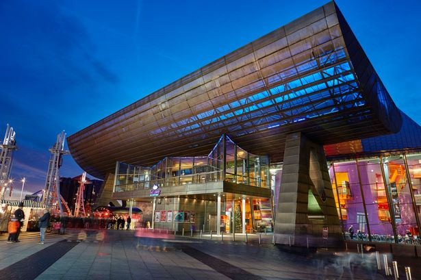

The Lowry is a theatre and gallery complex at Salford Quays, Salford, Greater Manchester, England. It is named after the early 20th-century painter L. S. Lowry, known for his paintings of industrial scenes in North West England. The complex opened on 28 April 2000[1] and was officially opened on 12 October 2000 by Queen Elizabeth II
The Lowry